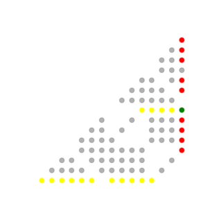
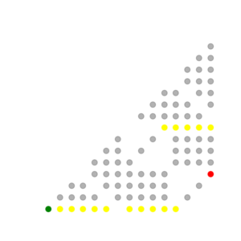
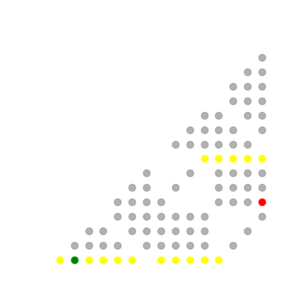
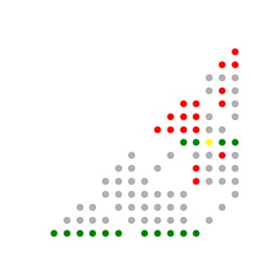
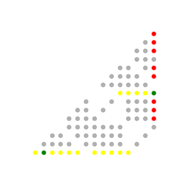
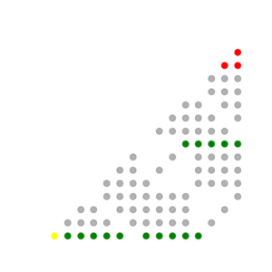
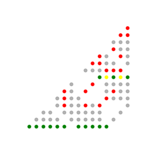

Intelligenze artificiali tra miti e algoritmi

Strumenti per la comprensione degli algoritmi di apprendimento automatico e delle loro narrazioni



La comunità eXtemporanea, attiva a Festivaletteratura dal 2016 e con varie altre istituzioni culturali e scientifiche (Biblioteca del CNR di Bologna, rete delle scuole del mantovano, etc.), propone un progetto interdisciplinare in sei (o più) tappe sugli algoritmi di apprendimento automatico (“Machine Learning”), sulle loro applicazioni in campo scientifico, e sul loro impatto sociale.
Il corso prevede momenti laboratoriali in presenza e momenti teorici online, ed è accessibile a un pubblico ampio di insegnanti di tutte le discipline, dall’ambito scientifico a quello umanistico. Il taglio della proposta è modulabile a seconda della partecipazione. Alle lezioni più dirette e tecniche si alterneranno momenti di dialogo e sperimentazione finalizzati alla creazione di una comunità che voglia cimentarsi con la proposta e sperimentazione di nuovi metodi didattici.
Tutto il materiale raccolto verrà reso disponibile tramite appropriati strumenti di condivisione online.
Modulo 1 (3h laboratorio + 2h teoria) – Come allenare un algoritmo umano
Per districare l’intreccio tra apprendimento algoritmico e intelligenza artificiale, istruiamo delle persone a ragionare come una macchina con un semplice gioco di ruolo a squadre. Simulando il funzionamento di un algoritmo si potrà comprendere alcuni meccanismi dell’apprendimento automatico e interrogarsi sulle analogie e differenze tra intelligenza umana e meccanica. Il protocollo (di cui chi partecipa deve essere all’oscuro) è descritto nel dettaglio all’indirizzo https://scienceground.it/%ce%bb4-come-allenare-un-algoritmo-umano-di-intelligenza-artificiale/
Il laboratorio, se replicato in condizioni controllate in più classi scolastiche, si presta anche alla raccolta di dati e alla successiva elaborazione. Inoltre permette l’apertura di porte su vari argomenti di logica e matematica in maniera naturale e leggera: rudimenti di probabilità e di teoria dei giochi, qualche calcolo combinatorio, il concetto di dimostrazione matematica, sino addirittura ai frattali. Alcune divagazioni sono raccolte nel report (in costruzione) https://gitlab.com/extemporanea/nim-plus/-/blob/master/report/draft.pdf.

Modulo 2 (2h laboratorio + 1h teoria) – Calcolatori meccanici con lego, biglie e domino
Dentro uno smartphone o un computer i calcoli vengono eseguiti in frazioni di secondo dai circuiti elettronici. Guardando all’hardware che maneggiamo tutti i giorni, è praticamente impossibile capirne anche i più basilari principi di funzionamento. Perdipiù le interfacce con cui vi interagiamo sono sempre più distanti da ciò che fisicamente avviene nel momento in cui lanciamo un programma. Questo laboratorio vuole offrire un’esperienza più concreta di cosa significhi costruire delle porte logiche — le componenti più basiliari dei computer — e un calcolatore meccanico in grado di esegure somme in maniera automatica. Lego, biglie e pezzi del domino ci aiuteranno a chiarire almeno un po’ quello che succede dietro gli schermi.
In questo secondo laboratorio ci addentriamo nella comprensione dei meccanismi logico-mecanici della computazione senza l’ausilio di un computer. Nella seconda parte dell’incontro discuteremo di altre possibili idee laboratoriali analoghe per l’obiettivo ideale di “costruire” un intero computer senza elettronica.

Modulo 3 (3h laboratorio/teoria) – Programmazione e strumenti informatici
Dopo aver esplorato il computer senza computer, ora imbracciamo desktop e laptops per introdurre i fondamenti del linguaggio di programmazione Python, con l’obiettivo di programmare l’algoritmo esplorato nel Modulo 1. È utile (ma non necessario) che chi partecipa abbia a diposizione un computer. Verranno date in anticipo istruzioni precise per installare Python o accedere a editor online.
Verrà poi illustrato un codice più avanzato da noi programmato per la simulazione di livelli superiori del gioco e per l’analisi dati. Il codice è di dominio pubblico (https://gitlab.com/extemporanea/nim-plus).
Infine verrà presentato lo strumento Gitlab per la condivisione di codice online, che permetterà alle classi che vorranno continuare di partecipare autonomamente al progetto.

Modulo 5 (3h + 3h teoria) – Aspetti teorici generali su Big Data e Machine Learning
In queste due lezioni, più avanzate sul piano matematico, verrà dato un inquadramento teorico generale degli strumenti più comuni con cui vengono costruiti gli algoritmi di apprendimento automatico da database, in particolare le reti neurali. L’enfasi è su questioni fondamentali, piuttosto che sulla costruzione dei dettagli di un algoritmo specifico.
La prima lezione, accessibile a tutti, è destinata alla comprensione, anche tramite una piccola attività laboratoriale replicabile in classe, degli usi e abusi della statistica fuori e dentro le scienze, e dei problemi specifici posti dalla sovrabbondanza di dati. La seconda lezione, più complessa sul piano matematico, affronta invece qualche elemento tecnico comune a tutti gli algoritmi di apprendimento automatico, e nello specifico delle reti neurali. Questa seconda parte della lezione non è indirizzata alla preparazione di materiale didattico, ma alla formazione del personale docente rispetto ai più recenti sviluppi e problematiche.

Bibliografia
Reinhart, Alex. Statistics done wrong: The woefully complete guide. No starch press, 2015, https://www.statisticsdonewrong.com/
Katz, Yarden. Artificial whiteness. Columbia University Press, 2020.
O’Neil, Cathy. Weapons of math destruction: How big data increases inequality and threatens democracy. Broadway Books, 2016.
Collins, Harry. Artifictional intelligence: against humanity’s surrender to computers. John Wiley & Sons, 2018.
Calude, Cristian S., and Giuseppe Longo. “The deluge of spurious correlations in big data.” Foundations of science 22.3 (2017): 595-612.
Mehlig, Bernhard. Machine Learning with Neural Networks: An Introduction for Scientists and Engineers. Cambridge University Press, 2021., https://arxiv.org/abs/1901.05639
Wilmott, Paul. Machine learning: an applied mathematics introduction. Panda Ohana Publishing, 2019.
Seaver, Nick. “Algorithms as culture: Some tactics for the ethnography of algorithmic systems.” Big data & society 4.2 (2017): 2053951717738104.
Rouvroy, Antoinette, and Bernard Stiegler. “The digital regime of truth: from the algorithmic governmentality to a new rule of law.” La Deleuziana 3 (2016): 6-29.
Rotskoff, Grant M., and Eric Vanden-Eijnden. “Neural networks as interacting particle systems: Asymptotic convexity of the loss landscape and universal scaling of the approximation error.” stat 1050 (2018): 22.
Enable 2021: Cross-Disciplinary Session, with Matteo Polettini and Harry Collins, https://www.youtube.com/watch?v=fzaGExiF53s&t=2170s
Crawford, Kate. Atlas of AI: power, politics, and the planetary costs of artificial intelligence. Yale University Press, 2021.